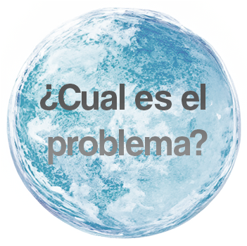

El Objetivo 14 pretende conservar y utilizar sosteniblemente los océanos, los mares y los recursos marinos. La existencia humana y la vida en la Tierra dependen de unos océanos y mares sanos. Los océanos son intrínsecos a nuestra vida en la Tierra. Cubren tres cuartas partes de la superficie terrestre, contienen el 97 % del agua de la Tierra y representan el 99 % del espacio vital del planeta por volumen.
¿Por qué?
Los océanos son el soporte vital de nuestro planeta y regulan el sistema climático mundial. Constituyen el mayor ecosistema del mundo, albergan casi un millón de especies conocidas y presentan un enorme potencial científico sin explotar.
Los océanos y la pesca siguen cubriendo las necesidades económicas, sociales y medioambientales de la población mundial. A pesar de lo importante que es proteger los océanos, décadas de explotación irresponsable de los recursos han provocado un nivel alarmante de degradación.
¿Cuál es el problema?
Los océanos absorben alrededor del 23 % de las emisiones anuales de CO2 generadas por la actividad humana y contribuyen a mitigar los efectos del cambio climático. Además, absorben el 90 % del exceso de calor causado por el cambio climático. El calentamiento de los océanos está alcanzando niveles récord, lo que provoca olas de calor marinas generalizadas, amenaza sus ricos ecosistemas y destruye los arrecifes de coral de todo el mundo.
El aumento de los niveles de residuos en los océanos del mundo también supone un importante impacto medioambiental y económico. Se calcula que cada año llegan a los mares y océanos entre 5 y 12 millones de toneladas métricas de plástico, con un coste aproximado de 13.000 millones de dólares anuales, entre los que se incluyen los costes de limpieza y las pérdidas financieras sufridas por la pesca y otras industrias. Cerca del 89 % de los residuos plásticos encontrados en el fondo de los océanos son artículos de un solo uso, como bolsas de plástico.
Cerca del 80 % del turismo se concentra en zonas costeras. Se calcula que la industria del turismo marítimo y costero genera 134.000 millones de dólares al año y, en algunos países, esta industria representa ya más de un tercio de la mano de obra.
De no gestionarse de manera responsable, el turismo puede suponer una grave amenaza para los recursos naturales de los que depende, así como para la cultura e industria locales.
¿Qué podemos hacer?
Para garantizar el desarrollo sostenible de las zonas de alta mar y de aguas profundas y proteger los hábitats más vulnerables, se necesita una mayor cooperación internacional. Para conservar la biodiversidad y garantizar un futuro sostenible al sector de la pesca, deben establecerse sistemas de gestión completos, eficaces y equitativos de áreas protegidas por el Estado.